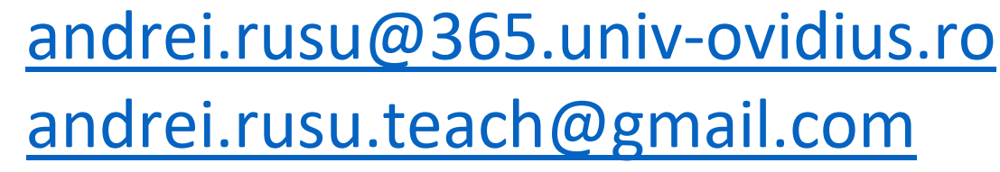

Andrei Rusu’s page for students
Util
- Vrei lucrarea de licenta/disertatie sa arate impecabil? Foloseste LaTeX! Vrei sa inveti rapid a utila LaTeX? Nimic mai simplu, nu trebuie sa instalezi nimic, e suficient sa-ti deschizi un cont gratuit pe writeLaTeX.com sau ShareLaTex.
- Cum scriem direct cu diacritice în LaTeX? Nimic mai simplu, vezi template-ul Diacritice în LaTeX.
- Servicii de hosting gratuit. Pare sa fie chiar asa. Spatiu de 20 GB, Trafic – 150GB, PHP (orice versiune), MySql la alegere. Chiar este curios cat va dura. Oricum in alta forma acelasi lucru il ofera si Google, si Dropbox, etc.
- Servicii de masini virtuale, simplu de creat, simplu de gestionat: Digital Ocean.
- Analele științifice ale Universității Ovidius din Constanța. Matematica.
2020-2021
Protecția muncii în cadrul orelor la clasă (când suntem la școală)
În cadrul orelor la clasă (Curs / Seminar / Laborator / Practică) trebuie urmate regulile de conduită specificate în documentele ce urmează:
- Reguli specifice în cadrul FMI aici sau aici,
- Reguli în caz de cutremur aici sau aici.
Teme de licență / master / grad 1
Pentru comunicare mai rapidă și poate mai comodă cu cei cărora le sunt îndrumător la lucrare de licență/master sau doresc să le fiu îndrumător va rog să folosiți și acest grup de pe WhatsApp.
Lista temelor de
licență (info + cs) / master (mvmod + mti) / grad 1 (mate + info) - urmează să apară
Referitor la titlurile temelor de licență și master, dacă doriți să susțineți cu mine o altă temă - Vă rog să mă anunțați, să îmi spuneți cam la ce temă Vă gândiți, ce plan de acțiune aveți. Apoi vom vedea dacă o mai putem adăuga în lista temelor aprobate de facultate (de obicei se aprobă).
Tot aici vor apare și informații pentru studenții înscriși la mine pentru lucrarea de licență, disertație sau grad 1.
Lista temelor luate / rezervate - urmează să fie precizată
Semestrul 1 de toamnă, 2020-2021
Email-uri trimiteti pe adresele:

- Inteligența artificială -
Teams -
Webex -
Discord -
Moodle -
Spec.: Matematică-Informatică, anul 1, FMI
- Inteligență artificială aplicată -
Teams -
Webex -
Discord -
Moodle -
Spec.:Medii virtuale multi-modale și distribuite (MVMOD), anul 1, FMI
- Elemente de tehnologia informațiilor. Informatica pentru adminstrația publică -
Teams -
Webex -
Discord -
Moodle -
Spec.: Asistență amangerială și administrativă (AMA), anul 1, FDSA
- Componente, concepte și tehnologii de rețele de calculatoare -
Teams -
Webex -
Discord -
Moodle -
Spec.: Administrator rețele de comunicații (ARLC), anul 1, Colegiul UOC
- Consultații -
Teams -
Webex -
Discord -
Moodle -
Luni, 8-10 (Să ma anunțați în prealabil despre intenție)
- Inteligență artificială (Licență: Matematică-Informatică (MI), anul 3)
- Inteligență artificială aplicată (Master: Medii virtuale multi-modale și distribuite (MVMOD), anul 1)
- Consultații: Luni, 8-10 (Rog să mă anunțați prin email/tel/whatsapp când intenționați să ne întâlnim. În principiu ora și ziua pot fi adaptate la necesitate.)
Facultatea de drept și științe administrative
Colegiul UOC
Facultatea de științe economice
Practica 2021
- Practică de specialitate (Spec.: Informatică, anul 2, grupa 2 - 2 săptămâni imediat după sesiunea din vară)